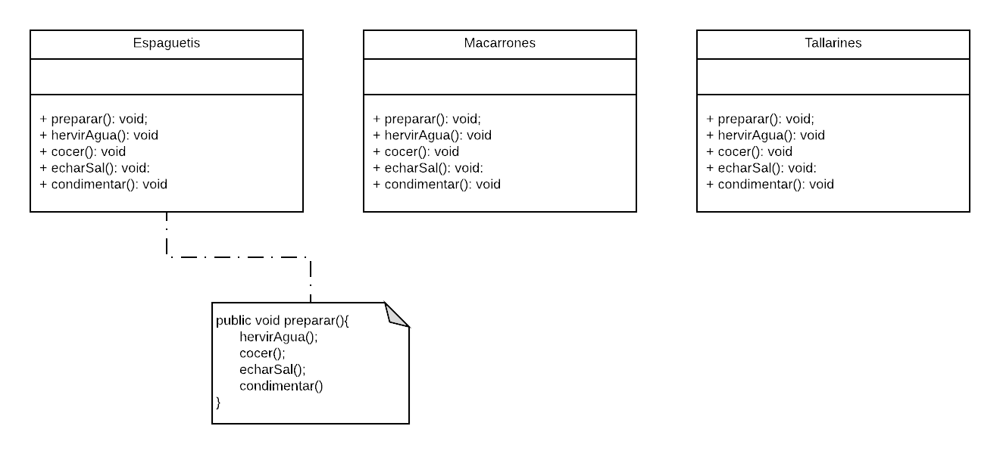

El patrón de diseño Template Method
La encapsulacion está a la orden del día en los patrones de diseño. Encapsulamos para simplificar y abstraer procesos, como la creacion de objetos o la llamada a multiples funciones de diversos objetos. El Template Method busca encapsular algoritmos, una secuencia finita de acontecimientos que llevan a un resultado. El patrón Template Method busca simplificar, mediante la llamada a un método, la resolucion de un algoritmo con diferentes partes y cuya lógica depende de las clases concretas.
En realidad, todos estos métodos pueden encapsularse en una sola llamada desde una clase abstracta que englobe las demás clases. Esta clase abstracta tendrá un método que podremos llamar preparar() y que mediante el uso de otro patron (el Facade) delegará su lógica en los métodos de las clases concretas. Por ejemplo, es posible que los tallarines haya que cocerlos menos tiempo que los macarrones, pero nosotros no lo sabremos, simplemente abstraeremos la lógica de la preparación en la clase Pasta y su método preparar(). Otros métodos como hervirAgua() y echarSal() no dependerán de la implementación concreta, por lo que podremos implementarlos en la propia clase abstracta. Los métodos que verdaderamente nos interesa obligar a implementar en las clases concretas son los que varían, y que también serán llamados por el método de la clase abstracta que ejecuta el algoritmo, preparar().

Lo que nos ha permitido el patrón Template Method es definir un algoritmo con una estructura predefinida pero con la implementación delegada en función del caso concreto. ¿Y qué pasa si queremos saltarnos un paso del algoritmo definido en el Template Method? Es posible que a alguien le guste la pasta sin añadir ningún condimento. En este caso tendríamos que evitar que el método preparar() de Pasta ejecutase el método condimentar() condicionalmente. Esto lo denominamos como un hook, un «gancho» en mitad de la ejecución a través del cual podemos modificar el comportamiento del método.
El patron Template Method nos rodea por todas partes. Está en todos lado. Allí donde necesitemos sobreescribir un método de una clase abstracta para dotar de funcionalidad a nuestra clase concreta, hay un Template Method. Los frameworks se nuetren de eso. Cuando queremos implementar una lógica específica entre muchas que podríamos implementar, por ejemplo, a la hora de comparar dos objetos, estamos usando un Template Method. Es posiblemente un patrón que estamos muy acostumbrados a usar gracias a la ligica de la herencia pero que contiene truquitos como los hooks que son convenientes tener en cuenta.
El contenido de este apartado ha sido extraido de este enlace
Volver a la pagina principal